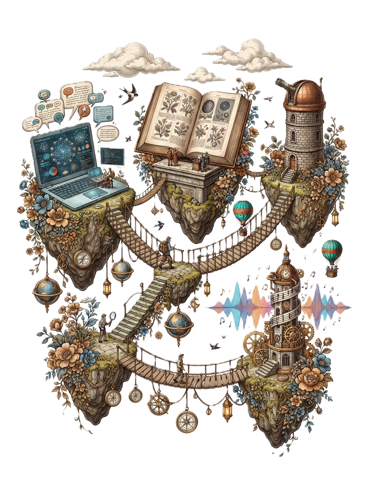
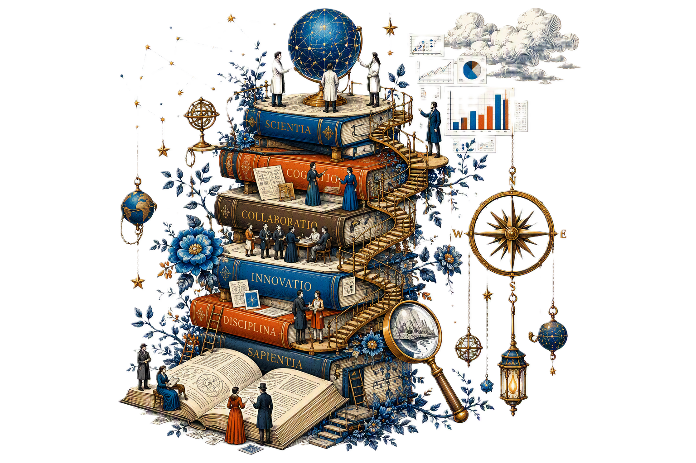

Data Scientist · Applied AI · RWTH Aachen
At 26 I packed up everything in Bangladesh and moved to Aachen, knowing almost no one. I had two published papers and a lot of audacity. What followed was three years of building real things.

About
I build things that are usable,
not just impressive in a notebook.
I had two published research papers and a university lecturing role in Bangladesh before I ever set foot in Germany. At 26 I decided that was not enough and moved to Aachen alone — with basic German and no contacts — to study Computational Social Systems at RWTH Aachen.
What followed was three years of building real things: ML pipelines and AI tools at E.ON, anomaly detection at Ecolab, a Master's thesis applying NLP to language and social connectedness. Projects that got deployed and actually used by real teams.

Experience
Mar 2024 — Present
E.ON
Essen, Germany
Apr 2023 — Oct 2023
E.ON
Essen, Germany
Oct 2022 — Mar 2023
Ecolab
Monheim, Germany
Selected Work
Compared an LLM-supported organisational assessment against a conventional self-assessment using quantitative and qualitative evidence. Evaluated accuracy, objectivity and usability — and translated findings into concrete recommendations on process design and analytical reliability.
Analysed 429 repeated observations from 40 participants to study language indicators of social connectedness. Benchmarked contextual LLM annotation against human coding and NLP baselines. Applied mixed-effects models to distinguish within-person and between-person patterns.
Built four internal AI tools using Python, RAG, and Microsoft Copilot Studio. Tested outputs against organisational evidence and human feedback. Documented methodological limitations and delivered recommendations to both technical and non-technical stakeholders.
ML-powered dashboard predicting employee attrition with 75% accuracy using Random Forest. Statistical analysis of 1,470 employees. Built with Streamlit — deployed and live.
Publications
Journal of Theoretical and Applied IT
91.1% accuracy — HOG features for comprehensive sign language recognition system.
Read Paper ↗IEEE
HOG + KNN pipeline for effective noise reduction in sign language recognition systems.
Read Paper ↗